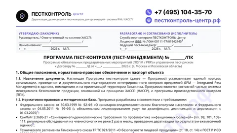
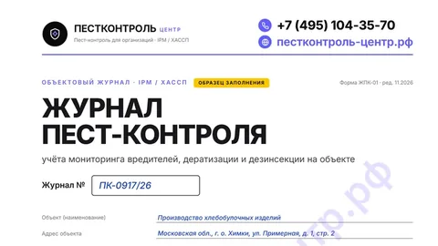
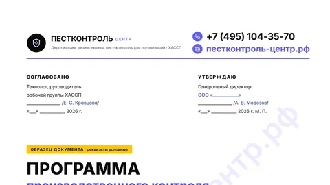
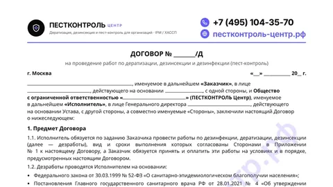

СанПиН и требования к дезинсекции и дератизации: что действует в 2026 году
Главный документ о дезинсекции и дератизации — СанПиН 3.3686-21, раздел III. Он действует до 1 сентября 2027 года. По нему организации и ИП обязаны обследовать объекты, вести учёт вредителей и проводить обработки — своими силами или через специализированную организацию. С 1 сентября 2026 года действуют новые правила для общепита, торговли и помещений, с 4–5 октября инспекторы работают по новым проверочным листам. Оказывать услуги по дезинсекции и дератизации с 1 марта 2025 года можно только по лицензии.
Что нужно знать о требованиях к пест-контролю в 2026 году
- Дезинсекцию и дератизацию обеспечивает сам бизнес. Юридические лица и ИП организуют на своих объектах профилактику, обследования, истребительные мероприятия и контроль их эффективности. Это можно делать своими силами или с привлечением специализированной организации (п. 88 СанПиН 3.3686-21). Санитарно-противоэпидемические мероприятия обязательны для всех, кто ведёт деятельность (п. 3 ст. 29 Федерального закона № 52-ФЗ).
- Для пищевых объектов, гостиниц, медицинских и детских организаций кратность выше. Пищевые производства, общепит, хранение и торговля продуктами, гостиницы, медицинские и детские организации относятся к объектам особого эпидемиологического значения (п. 98). Их обследуют на насекомых не реже 2 раз в месяц (п. 101), а дератизацию проводят по результатам ежемесячной оценки (п. 110).
- На пищевых объектах грызунов и насекомых быть не должно. В торговле продуктами, общепите и пищевой промышленности их наличие не допускается (п. 128 СанПиН 3.3686-21).
- Исполнитель — только с лицензией. С 1 марта 2025 года услуги по дезинфекции, дезинсекции и дератизации лицензируются. Без лицензии можно работать только для собственных нужд (99-ФЗ, постановление Правительства РФ № 337). Лицензию подрядчика проверяют в реестре Роспотребнадзора.
- Два главных СанПиН заканчивают действие в 2027 году: СанПиН 2.1.3684-21 — 1 марта, СанПиН 3.3686-21 — 1 сентября. После утверждения новых правил программы производственного контроля и договоры нужно будет обновить.
Как часто проводить дезинсекцию и дератизацию
Кратность установлена разделом III СанПиН 3.3686-21. Норма говорит об обследованиях — осмотре, учёте вредителей и проверке точек контроля. Обработки назначают по их результатам.
Другие объекты: насекомые — 1 раз в месяц, открытые территории — 1 раз в месяц, очаги — 1 раз в неделю (п. 101).
| Что и где | Как часто | Норма |
|---|---|---|
| Обследования на насекомых на объектах особого эпидемиологического значения: пищевые производства, общепит, хранение и торговля продуктами, гостиницы, медицинские и детские организации и другие объекты из п. 98 | Не реже 2 раз в месяц | п. 101 |
| Обследования на насекомых на других объектах; в п. 101 в скобках названы места общего пользования многоквартирных домов и общежитий | 1 раз в месяц | п. 101 |
| Открытые территории | 1 раз в месяц | п. 101 |
| Очаги инфекционных и паразитарных заболеваний, анофелогенные водоёмы | 1 раз в неделю | п. 101 |
| Оценка заселённости грызунами на объектах особого эпидемиологического значения; дератизацию проводят по её результатам | Ежемесячно | п. 110 |
| Системы мусороудаления, включая мусоросборные камеры; при обнаружении вредителей обработку проводят незамедлительно | Не реже 1 раза в месяц | п. 133 |
Если дезинсекция не дала результата, проверяют качество препарата и повторяют обработку инсектицидами из другой группы химических веществ (п. 99). Как инспекторы спрашивают о кратности — в разборе проверочных листов.
Действующие документы о дезинсекции и дератизации
Что в каждом документе важно для пест-контроля, сроки действия и ссылки на официальные тексты.
- Законыобязанность, лицензия, ответственность
- Санитарные правилачто и как часто делать
- Как проверяютвопросы инспектора
- Стандарты и методикиХАССП, GMP, рекомендации
- Ваши документычто покажете на проверке
Основные санитарные правила
| Документ | Что в нём для пест-контроля | Действует | Официальный текст |
|---|---|---|---|
| Федеральный закон от 30.03.1999 № 52-ФЗ «О санитарно-эпидемиологическом благополучии населения» | Ст. 29: санитарно-противоэпидемические мероприятия обязательны для граждан, ИП и юридических лиц | Действует | Гарант |
| СанПиН 3.3686-21 «Санитарно-эпидемиологические требования по профилактике инфекционных болезней», раздел III | П. 88 — обязанности организаций и ИП; п. 98 — перечень объектов особого эпидемиологического значения; п. 99 — контроль эффективности и смена средств; п. 101 — кратность обследований; п. 102 — подготовка помещений и информирование сотрудников; пп. 108–111 — дератизация; пп. 128–130 — пищевые объекты, торговля, места массового пребывания; п. 133 — мусороудаление | До 01.09.2027 | pravo.gov.ru |
| СанПиН 2.1.3684-21 — содержание территорий, помещений, санитарно-противоэпидемические мероприятия | П. 8 и приложение № 1 — уборка, дезинсекция и дератизация контейнерных площадок | До 01.03.2027; редакция от 10.09.2026 действует с 05.10.2026 | pravo.gov.ru, текст редакции |
Отраслевые правила 2026 года — действуют с 01.09.2026
| Документ | Что в нём для пест-контроля | Источник |
|---|---|---|
| СанПиН 2.3/2.4.4282-26 — общественное питание | П. 4 — производственный контроль на принципах ХАССП; п. 26 — в помещениях не должно быть насекомых, грызунов, синантропных птиц и животных; п. 45 — нельзя хранить и готовить продукцию во время обработок и применять распыляемые и рассыпаемые средства при посетителях и персонале | Гарант, проверочный лист № 580, прил. 2 |
| СП 2.3.6.4281-26 — торговля пищевой продукцией, рынки | П. 46 — сыпучие продукты хранят в помещениях, не заражённых амбарными вредителями; п. 72 — дератизация площадки накопления отходов; п. 78 — насекомые и грызуны не допускаются, нужны дезинсекция, дератизация и инженерная защита зданий | ЦГОН Роспотребнадзора, проверочный лист № 580, прил. 1 |
| СП 2.1.4284-26 — эксплуатация помещений, гостиницы, услуги, медицинские организации | П. 14 — в помещениях не должно быть насекомых, грызунов и следов их жизнедеятельности; при их появлении обработки проводит организация, осуществляющая дезинфекционную деятельность, в отсутствие работников и потребителей. Пп. 14 и 21 — грызунонепроницаемость перекрытий и мест прохода коммуникаций (вопрос из листа для медицинских организаций) | КонсультантПлюс, проверочный лист № 578, прил. 10 |
| СП 2.4.2.4283-26 — детские и образовательные организации | Организация и контроль дезинфекции, дезинсекции и дератизации; в загородных лагерях перед сменой — противоклещевая обработка и борьба с грызунами | проверочный лист № 578, прил. 14 |
Проверочные листы
| Документ | Что в нём | Действует | Текст |
|---|---|---|---|
| Приказ Роспотребнадзора от 20.07.2026 № 578 — 31 форма: торговля непродовольственными товарами, гостиницы, медицинские организации, аптеки, образование, отходы и другие | Вопросы о насекомых и грызунах, кратности обследований и исполнителе работ | С 04.10.2026; заменил приказ № 18 от 20.01.2022 | Гарант |
| Приказ Роспотребнадзора от 20.07.2026 № 580 — 6 форм: торговля пищевой продукцией, общепит, спорт, прачечные, салоны красоты, бани | Те же вопросы плюс запреты при обработках в общепите и амбарные вредители в торговле | С 05.10.2026; заменил приказ № 808 от 24.12.2021 | официальная публикация, Гарант |
Разбор всех вопросов о вредителях по видам объектов — на странице «Проверочные листы 2026».
Лицензия и требования к исполнителю
| Документ | Что в нём | Действует | Текст |
|---|---|---|---|
| 99-ФЗ «О лицензировании отдельных видов деятельности», пп. 59 п. 1 ст. 12; Положение о лицензировании — постановление Правительства РФ от 20.03.2024 № 337 | Лицензия на услуги по дезинфекции, дезинсекции и дератизации. Не нужна, если работы выполняют для собственных нужд | С 01.03.2025 | ЦГОН Роспотребнадзора, Роспотребнадзор по Кировской области |
| Реестр лицензий Роспотребнадзора | Проверка лицензии подрядчика | — | fp.rospotrebnadzor.ru |
| Приказ Роспотребнадзора от 30.05.2024 № 415 | Форма программы производственного контроля для организаций, которые оказывают эти услуги | 01.09.2024–01.09.2030 | pravo.gov.ru |
Методические документы
| Документ | Что в нём | Текст |
|---|---|---|
| МР 3.5.3.0374-25 «Дератизация. Организация и проведение дератизационных мероприятий» | Утверждены 28.04.2025 взамен МУ 3.5.3.2949-11. Виды дератизации, ежемесячные мероприятия на объектах особого эпидемиологического значения, учёт в контрольно-учётной карте объекта | legalacts.ru |
| МР 5.1.0098-14 «Методические подходы к организации оценки процессов производства (изготовления) пищевой продукции на основе принципов ХАССП» | Утверждены 18.12.2014. По процедуре дезинсекции и дератизации инспектор запрашивает инструкции, договоры, акты сдачи-приёмки, журналы, графики и осматривает объект | Роспотребнадзор, PDF |
Пищевая безопасность, ХАССП и GMP
| Документ | Что в нём для пест-контроля | Текст |
|---|---|---|
| ТР ТС 021/2011 «О безопасности пищевой продукции» | Ст. 10 ч. 3 п. 10 — процедура на принципах ХАССП: выбрать способы, установить периодичность и проводить дезинсекцию и дератизацию производственных помещений. Ст. 17 — защита продукции от грызунов и насекомых при хранении и перевозке | Техэксперт, Роспотребнадзор по Санкт-Петербургу |
| ГОСТ Р 51705.1-2024 «Системы менеджмента качества. Управление качеством и безопасностью пищевых продуктов на основе принципов ХАССП. Общие требования» | Введён с 01.11.2024 взамен ГОСТ Р 51705.1-2001 | Гарант |
| ГОСТ Р 54762-2011/ISO/TS 22002-1:2009 «Программы предварительных требований по безопасности пищевой продукции. Часть 1. Производство пищевой продукции» | Раздел 12 «Борьба с вредителями»: программы борьбы с вредителями, защита от проникновения | Гарант |
| Правила надлежащей производственной практики ЕАЭС (решение Совета ЕЭК от 03.11.2016 № 77) | П. 3.4: помещения должны максимально защищать от проникновения насекомых и животных | Гарант |
Ответственность
| Документ | Что в нём | Текст |
|---|---|---|
| КоАП РФ, ст. 6.3, 6.4, 6.6, 14.43, 19.5 | Штрафы и приостановление деятельности за санитарные нарушения, нарушение технических регламентов и невыполнение предписания. Суммы — в таблице на странице санитарного аудита | ст. 6.3, ст. 6.4, ст. 6.6 |
Что меняется в 2026–2027 годах
Прошедшие события отмечены серым, предстоящие — цветом.
- Услуги по дезинсекции и дератизации — только по лицензии
- Новые правила для общепита, торговли, помещений и условий труда
- Начали применяться новые проверочные листы
- Новая редакция СанПиН 2.1.3684-21
- Заканчивается срок СанПиН 2.1.3684-21
- Заканчивается срок СанПиН 3.3686-21
Вступили в силу правила для общепита, торговли, помещений и условий труда
Что сделатьОбновить ссылки в программе производственного контроля и программе пест-контроля
Начали применяться новые проверочные листы
Что сделатьПройти вопросы своей формы — разбор проверочных листов
Вступила в силу редакция СанПиН 2.1.3684-21 от 10.09.2026
Заканчивается срок СанПиН 2.1.3684-21. В июле 2026 года разработан проект замены (Техэксперт)
Что сделатьПосле утверждения сверить ссылки в программах и договоре
Заканчивается срок СанПиН 3.3686-21. Изменения, подготовленные в марте 2026 года, раздел о дезинсекции и дератизации не затрагивают (Гарант)
Что сделатьМы отслеживаем проекты и обновим эту страницу и образцы документов после публикации новых правил
Заканчивается срок формы программы производственного контроля для исполнителей (приказ № 415)
Документы, которые больше не действуют
Если программа производственного контроля, программа пест-контроля или договор ссылаются на эти документы, их пора обновить: инспектор и аудитор торговой сети увидят, что документы давно не пересматривали.
| Устаревший документ | Чем заменён | С какой даты |
|---|---|---|
| СанПиН 3.3686-21, раздел III | 01.09.2021 (Техэксперт) | |
| СанПиН 3.3686-21, раздел III | 3472-17 утратил силу 01.09.2021 (NormaCS, Контур) | |
| МР 3.5.3.0374-25 | Утверждены 28.04.2025 | |
| СанПиН 2.3/2.4.4282-26 | 01.09.2026 | |
| СП 2.3.6.4281-26 | 01.09.2026 | |
| СП 2.1.4284-26 | 01.09.2026 | |
| ГОСТ Р 51705.1-2024 | 01.11.2024 | |
| Приказы Роспотребнадзора | Приказы № 578 и № 580 от 20.07.2026 | 04–05.10.2026 |
Какие требования применяются к вашему объекту
| Объект | Основные требования | Проверочный лист |
|---|---|---|
| Пищевое производство | СанПиН 3.3686-21 (пп. 98, 101, 110, 128); ТР ТС 021/2011, ст. 10; ГОСТ Р 54762-2011, раздел 12 | Отдельной формы в приказах № 578 и № 580 нет. Процедуры ХАССП оценивают по МР 5.1.0098-14 |
| Ресторан, кафе, столовая | СанПиН 2.3/2.4.4282-26 (пп. 4, 26, 45); СанПиН 3.3686-21 (пп. 98, 101, 110, 128) | № 580, приложение 2. Питание детей — № 578, приложение 24 |
| Магазин продуктов, рынок | СП 2.3.6.4281-26 (пп. 46, 72, 78); ТР ТС 021/2011, ст. 17; СанПиН 3.3686-21 (п. 128) | № 580, приложение 1 |
| Склад пищевой продукции | СанПиН 3.3686-21 (пп. 98, 101, 110, 128); ТР ТС 021/2011, ст. 17 | Отдельной формы нет |
| Гостиница | СП 2.1.4284-26 (п. 14); СанПиН 3.3686-21 (пп. 101, 110, 130, 133) | № 578, приложение 2 |
| Медицинская организация | СП 2.1.4284-26 (пп. 14, 21, 24, 44); СанПиН 3.3686-21 (п. 110) | № 578, приложение 10 |
| Аптека | СП 2.1.4284-26 (п. 14); СанПиН 3.3686-21 (пп. 101, 108, 110) | № 578, приложение 11 |
| Магазин непродовольственных товаров | СП 2.1.4284-26 (п. 14); СанПиН 3.3686-21 (пп. 98, 108) | № 578, приложение 1 |
| Фармацевтическое производство | Правила GMP ЕАЭС, п. 3.4 | — |
Это ориентир. На одном объекте может применяться несколько форм — например, в гостинице с рестораном. Номера вопросов о вредителях для каждой формы — в разборе проверочных листов.
Разборы и образцы документов

ОбразецПрограмма пест-контроляСмотреть образец →
ОбразецЖурнал пест-контроляСмотреть образец →
ОбразецПрограмма производственного контроля по ХАССПСмотреть образец →
ОбразецДоговор на дератизацию и дезинсекциюСмотреть договор → УслугаСанитарный аудит: виды проверок и штрафыПодробнее →Кто подготовил материал

ИсточникиОфициальные тексты (проверено 06.11.2026)
- СанПиН 3.3686-21 — pravo.gov.ru
- СанПиН 2.1.3684-21 — pravo.gov.ru, редакция от 10.09.2026
- Правила 2026 года — КонсультантПлюс, Гарант, ЦГОН Роспотребнадзора
- Приказы № 578 и № 580 — Гарант: № 578, Гарант: № 580, официальная публикация № 580; даты вступления в силу — ppt.ru: № 578, ppt.ru: № 580
- Лицензирование — ЦГОН Роспотребнадзора, реестр лицензий, приказ № 415
- МР 3.5.3.0374-25 — legalacts.ru; МР 5.1.0098-14 — Роспотребнадзор
- ТР ТС 021/2011 — Техэксперт; ГОСТ Р 51705.1-2024 — Гарант; ГОСТ Р 54762-2011 — Гарант; GMP ЕАЭС — Гарант
- Проекты и изменения — Техэксперт: замена СанПиН 2.1.3684-21, Гарант: изменения СанПиН 3.3686-21
- 52-ФЗ, ст. 29 — Гарант; КоАП — ссылки в таблице «Ответственность»
Вопросы о нормативных требованиях
СанПиН 3.3686-21 «Санитарно-эпидемиологические требования по профилактике инфекционных болезней», раздел III. Он действует до 1 сентября 2027 года. Отраслевые требования содержатся в правилах 2026 года для общепита, торговли и помещений, а для пищевых производств — ещё и в ТР ТС 021/2011.
Да. Юридические лица и ИП обеспечивают дезинсекцию и дератизацию на своих объектах — сами или через специализированную организацию (п. 88 СанПиН 3.3686-21). Это не обязательно ежемесячная раскладка родентицидов: дератизация включает обследование, профилактику и истребительные мероприятия по результатам оценки (пп. 108–110).
Зависит от объекта. На объектах особого эпидемиологического значения — пищевых и торговых, в гостиницах, медицинских и детских организациях — обследования на насекомых проводят не реже 2 раз в месяц, на других объектах — раз в месяц (п. 101 СанПиН 3.3686-21). Заселённость грызунами на объектах особого эпидемиологического значения оценивают ежемесячно, а дератизацию проводят по результатам оценки (п. 110). Обработки назначают по результатам обследований.
Это объекты из перечня в п. 98 СанПиН 3.3686-21. Среди них организации пищевой промышленности и общественного питания, организации, которые хранят и продают пищевую продукцию, гостиницы и общежития, медицинские, санаторно-курортные и детские образовательные организации, вокзалы, аэропорты и объекты транспорта. Перечень широкий: в него входят также здания, предназначенные для постоянного или временного пребывания людей, и объекты коммунально-бытового назначения. Их обследуют на насекомых не реже 2 раз в месяц, а дератизацию проводят по результатам ежемесячной оценки.
С 1 марта 2025 года услуги по дезинфекции, дезинсекции и дератизации оказывают только по лицензии. Если организация работает для собственных нужд, лицензия ей не нужна. При этом в проверочных листах для гостиниц, аптек, спортивных объектов, бань и магазинов непродовольственных товаров есть вопрос, проводит ли обработки «организация, осуществляющая дезинфекционную деятельность».
Нет. СП 3.5.3.3223-14 о дератизации утратили силу 1 сентября 2021 года, их требования вошли в раздел III СанПиН 3.3686-21. Тогда же утратил силу СанПиН 3.5.2.3472-17 о дезинсекции. Если программа или договор ссылаются на эти документы, ссылки нужно обновить.
Лучше обновить. Правила 2020–2021 годов для общепита, торговли и помещений заменены с 1 сентября 2026 года, а СП 3.5.3.3223-14 и СанПиН 3.5.2.3472-17 не действуют с 2021 года. Ссылки на отменённые документы показывают инспектору и аудитору, что программу давно не пересматривали.
В этот день заканчивается срок действия СанПиН 3.3686-21. Изменения, подготовленные в марте 2026 года, раздел о дезинсекции и дератизации не затрагивают. Мы отслеживаем проекты и обновим эту страницу и образцы документов, как только новые правила будут опубликованы.
На портале официального опубликования publication.pravo.gov.ru и в системе pravo.gov.ru. Ссылки на каждый документ — в таблицах выше и в списке источников.
Не уверены, что относится к вашему объекту?
Санитарный врач сопоставит ваш объект с требованиями и проверочным листом. Покажем, каких документов не хватает и какие ссылки в программах устарели.
- Сверка с СанПиН и проверочным листом вашего вида деятельности
- Список документов, которых не хватает
- Устаревшие ссылки в программах и договоре